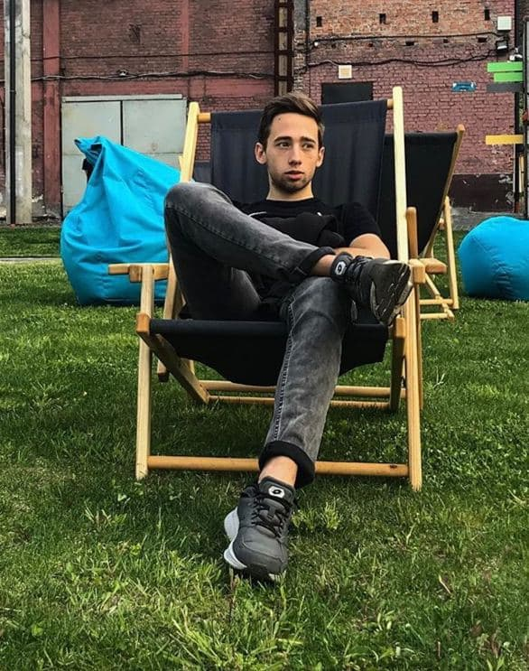

Andrew Goryachiy
I create turnkey websites, web applications, landing pages including design and prototypes. To achieve client's goal I usually use Wordpress to simplify future site managing.
In addition I create logos, banners, illustrations, business cards etc. I work in Adobe Illustrator, Adobe Photoshop and Figma.
Also I have a number of uncategorized projects and works, so I collect them in my Lab.
Feel free to contact me, let's make great things together! More information about me in my resume
In addition I create logos, banners, illustrations, business cards etc. I work in Adobe Illustrator, Adobe Photoshop and Figma.
Also I have a number of uncategorized projects and works, so I collect them in my Lab.
Feel free to contact me, let's make great things together! More information about me in my resume